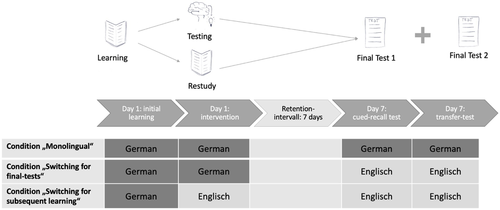
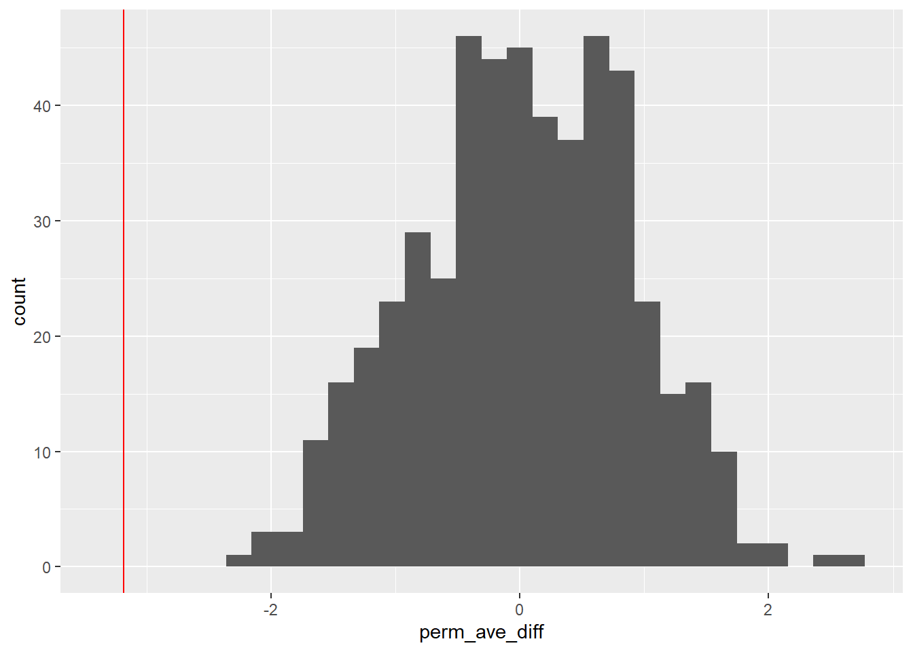
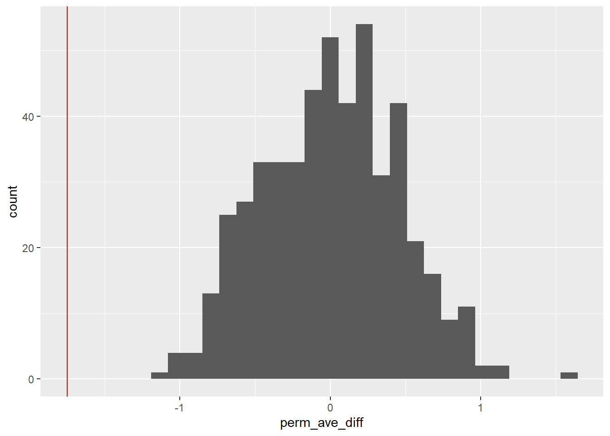
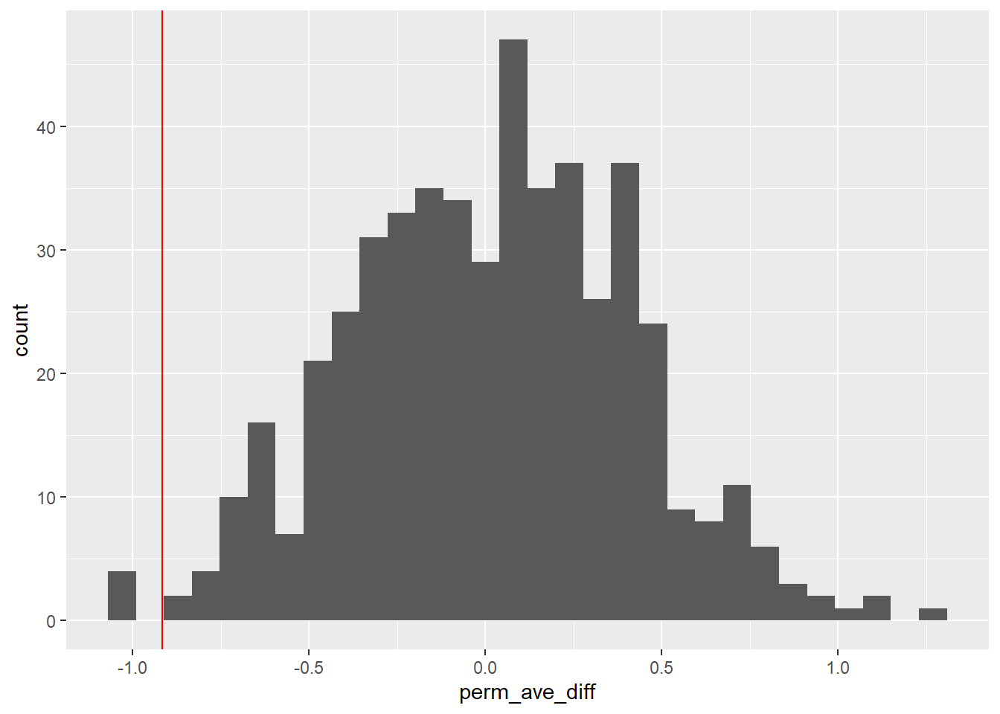

A few permutation tests and a discussion on CLIL in psycholinguistics.
Author
Rowan Norenberg
Published
October 30, 2025
CLIL and Cognition
If you are a Pomona student who has gone abroad, is looking into studying abroad, or - like me - backed out of studying abroad, you might know that many of the abroad programs Pomona offers in countries where English is not the dominant language for academia require you to take at least half, if not all, of your courses in your target language. This type of instruction is called Content and Language Integrated-Learning (CLIL). I personally ended up backing out of studying abroad after completing the entire process because, despite the program only requiring French 044 and merely recommending French 101, I did not feel ready to take 5 classes entirely in French at the end of my French 101 course. Despite passing with an A, and therefore supposedly knowing how to read and write at an academic level in my target language, I felt under-confident in my abilities. The previous semester, I had taken French Phonetics - a non-language course taught entirely in French - and while it had been fascinating and rewarding, it was also one of the hardest classes I had ever taken. So the ideal of CLIL was extremely daunting. But why is CLIL practiced? What are the benefits? Do students really struggle in CLIL programs, or did I just take a particularly brutal phonetics course?
CLIL is a method of bilingual instruction that was made popular relatively recently, where students are taught non-language study subjects in a language that they are still learning. This is intended to work as a sort of efficiency increase; students will, in theory, learn the subject material while also improving in their target language.
However, it is theorized that the cognitive burden of language-switching costs (LSC) outweigh the possible benefits of CLIL. The encoding-specificity hypothesis, or the language dependent knowledge representation framework, claim that information that is learned in one language is thus ‘encoded’ in that language, or that the representation of knowledge is language-dependent. Essentially, that information learned in one language context is difficult to retrieve in other language contexts. This is quite the claim, as the dual-activation model, which is the model of bilingual cognition the field currently operates under, states that all languages that a bilingual person uses are activated simultaneously.
However, encoding-specificity might have nothing to do with dual-activation at all. While there has always been great debate as to whether bilingualism has an effect on cognitive control processes, a relatively new model of cognitive control (proposed in Green & Abutalebi, 2013) breaks down both cognitive control and bilingualism into more specific categories. This new model, the Adaptive Control Hypothesis, identifies three types of bilingual language use contexts: single language, where each language is used in a distinct context; dual language, where both languages are used in the same context but with different speakers who may speak only one of the bilingual’s languages; and dense code-switching, where both languages are used in the same context but with other bilingual speakers. Bialystok & Craik (2022) built upon the hypothesis, defining which of the 7 control processes received higher demand in each of the 3 interactional contexts of bilingual speakers.
Demands on control processes in the 3 interactional contexts of bilingual speakers. From (Bialystok & Craik, 2022). Note that + indicates that the context increases the demand on that control process, while = indicates that the context has a neutral effect.
Under the Adaptive Control Hypothesis, it could be theorized that because single-language context use is the context experienced by CLIL students, perhaps Goal Maintenance and Interference Control have the most impact on knowledge encoding and retrieval.
Though many studies report benefits of CLIL when it comes to language competencies (Dalton-Puffer, 2008), many others report that students in CLIL struggle compared to students in monolingual education, either performing worse overall or needing more time to display the same level of knowledge as their monolingual peers (e.g., Lo and Lo, 2014, Dallinger et al., 2016, Piesche et al., 2016).
Recent studies in particular focus on LSC, reporting worse performance or longer reaction times when knowledge is retrieved from a different language than it was encoded or acquired in. Wußing et al., 2023, claims that language-switching is directly detrimental to retrieval-based learning. Retrieval-based learning, which has been studied mostly through the “testing-effect”, is a type of learning where a practice test is taken after an initial learning phase to induce the test-taker to “retrieve” the information. Retrieval-based learning consistently increases learning performance compared to the restudy method (where participants restudy the same information after the initial learning phase). Because retrieval-based learning is so effective, it would be concerning for CLIL students if LSC is directly detrimental. Additionally, if different intervals of language-switching had different effects, this might indicate which bilingual use context has the greatest impact on retrieval-based learning. After reading the study, I wanted to use the lens of the Adaptive Control Model to look at the data that was collected.
All data in this project comes from Wußing et al., 2023, whose anonymous participant trial data is available for public access and use through the Center for Open Science (aka Open Science Framework, or OSF), a non-profit organization which aims to “increase the openness, integrity, and reproducibility of scientific research and scholarly communication” as an open-source database.
Wußing et al., 2023
The study recruited 117 German-English bilingual participants, who were broken down into 6 groups. Half of the participants learned mathematical concepts with a practice-test, and half with a restudy opportunity, creating two within-subject conditions. These groups were then divided into thirds, with one third not switching languages, one switching only for the final test, and another switching between initial and subsequent learning, thus creating three between-subject conditions.
On the first day, all participants completed the initial learning phase. There were two texts, both with 10 paragraphs with each paragraph containing a single math concept. Each text was presented twice. After that, the restudy group was shown each concept individually to re-read, while the practice-test group filled in the blank concept name for each paragraph. This phase was also repeated twice.
After 7 days, participants performed a cued recall test and a transfer test. In the cued recall test, participants entered the concept name that matched the presented description. In the transfer test, participants evaluated the correctness of a given statement.

Schematic overview of the three between-subjects conditions regarding language-switching (Wußing et al., 2023).
The study claims that the results from these tests show the following main effects:
Participants performed better for the items learned via retrieval-based learning
Participants performed worse in conditions with language-switching
Language-switching had a more significant detrimental effect on retrieval-based learning than on restudy-based learning
Language switching had a more significant effect when the switch occurred after the initial learning phase and before subsequent learning, and in fact LSC only occurred with the switching for subsequent learning group
These claims give us a lot to explore. I have a few permutation tests I want to run on the data. Based on the claims the study makes, here are some Null Hypotheses that I am interested in. While I could use this data to see if retrieval-based learning correlates to better performance, retrieval-based learning is already very well studied and I am more interested in the psycholinguistics questions than the cogsci questions.
Null Hypothesis: Language switching has no effect on learning performance
Null Hypothesis: Language switching has no effect on restudy learning performance
Null Hypothesis: Language switching has no effect on retrieval learning performance
Null Hypothesis: The timing of a language switch has no impact on learning performance
Let’s explore the raw data for a moment. The column names were originally all in German, so I used my best judgement when translating, but know that I am not a native German speaker.
Show the code
#renamed all of the German variable names. I couldn't get the Proband:innen one to rename, I think because of the colon, but that's participant ID TesLaS_DataSet <- TesLaS_DataSet |>rename(trial_number = Nummer,condition = Bedingung,variant = Variante,cued_correct_images = Summe_Korrekt_Abbildungen,cued_correct_statements = Summe_Korrekt_Aussagen,cued_correct_total = Summe_Gesamt,cued_correct_testing = Summe_Korrekt_Testing,cued_correct_restudy = Summe_Korrekt_Restudy,testing_advantage_cued_recall = Testing_Vorteil_CuedRecall,transfer_correct_images = Tra_Summe_Korrekt_Abbildungen,transfer_correct_statements = Tra_Summe_Korrekt_Aussagen,transfer_correct_total = Tra_Summe_Gesamt,transfer_correct_testing = Korrekt_Testing_Transfer,transfer_correct_restudy = Korrekt_Restudy_Transfer,testing_advantage_transfer = Testing_Vorteil_Transfer ) |>mutate( #renamed the conditions so it's easier to follow later condition =case_when( condition ==1~"monolingual", condition ==2~"switching for final tests", condition ==3~"switching for subsequent learning" )) head(TesLaS_DataSet) #show 6 rows
Recall that there are three conditions: not switching languages, switching only for the final test, and switching between initial and subsequent learning stages. I am most interested in these variables: cued_correct_testing, cued_correct_restudy, transfer_correct_testing, and transfer_correct_restudy. Let’s take a glimpse at the observed means of each of these variables, just to get a feel for the data.
Show the code
TesLaS_means <- TesLaS_DataSet |>group_by(condition) |>summarise( #collapses it all into the grouped conditions mean_cued_correct_testing =mean(cued_correct_testing, na.rm =TRUE),mean_cued_correct_restudy =mean(cued_correct_restudy, na.rm =TRUE),mean_transfer_correct_testing =mean(transfer_correct_testing, na.rm =TRUE),mean_transfer_correct_restudy =mean(transfer_correct_restudy, na.rm =TRUE),n =n() #number of participants per condition )TesLaS_means #return the tibble, should be 3x6
Immediately we can see that for the monolingual condition, the average correct responses for the final tests are higher for the participants who did the practice tests, or who used retrieval learning.
However, when it comes to the group that switched languages halfway through learning, their average correct responses are noticeably lower than the other two conditions when using retrieval learning.
Let’s run some permutation tests, looking at each of the Null Hypotheses one at a time.
Null Hypothesis 1: Language switching has no effect on learning performance
For this permutation, I compared the monolingual condition to the condition which switched for subsequent learning. I also grouped together the cued final test and transfer final test, which I will do in every permutation. This is because I am not trying to look at what kind of final test participants perform better on. For this first permutation, I also grouped together the retrieval learning participants and the restudy learning participants, because I am looking at overall learning performace.
Show the code
set.seed(47)perm1_data <-function(rep, data) { data |>#picked conditions 1 and 3 to compare, I don't think I can do all 3 at oncefilter(condition =="monolingual"| condition =="switching for subsequent learning") |>select(condition, cued_correct_testing, transfer_correct_testing, cued_correct_restudy, cued_correct_testing) |>#I don't actually care about the results by the different types of final tests, so I'm combining themmutate(combined_testing = (cued_correct_testing + transfer_correct_testing + cued_correct_restudy + cued_correct_testing) /4) |>select(condition, combined_testing) |>#permute mutate(testing_perm =sample(combined_testing, replace =FALSE)) |>#compute the meangroup_by(condition) |>summarize(obs_ave =mean(combined_testing, na.rm =TRUE), perm_ave =mean(testing_perm, na.rm =TRUE) ) |>arrange(condition) |>#calculate differencessummarize(obs_ave_diff =diff(obs_ave),perm_ave_diff =diff(perm_ave),rep = rep)}
Show the code
set.seed(47)perm1_stats <-map(1:500, perm1_data, data = TesLaS_DataSet) |>list_rbind() perm1_stats |>ggplot(aes(x = perm_ave_diff)) +geom_histogram() +geom_vline(aes(xintercept = obs_ave_diff), color ="red")

Show the code
#two-sided p valueperm1_stats |>summarize(p_val_two_sided =mean(abs(perm_ave_diff) >abs(obs_ave_diff)) )
# A tibble: 1 × 1
p_val_two_sided
<dbl>
1 0
Null Hypothesis 2: Language switching has no effect on restudy learning performance
For this permutation, I compared the monolingual condition to the condition which switched for subsequent learning and grouped together the cued final test and transfer final test, as in permutation 1. For this permutation, I only looked at the participants who used restudy learning.
Show the code
set.seed(47)perm2_data <-function(rep, data) { data |>#picked conditions 1 and 3 to compare, I don't think I can do all 3 at oncefilter(condition =="monolingual"| condition =="switching for subsequent learning") |>select(condition, cued_correct_restudy, transfer_correct_restudy) |>#I don't actually care about the results by the different types of final tests, so I'm combining themmutate(combined_testing = (cued_correct_restudy + transfer_correct_restudy) /2) |>select(condition, combined_testing) |>#permute mutate(testing_perm =sample(combined_testing, replace =FALSE)) |>#compute the meangroup_by(condition) |>summarize(obs_ave =mean(combined_testing, na.rm =TRUE), perm_ave =mean(testing_perm, na.rm =TRUE) ) |>arrange(condition) |>#calculate differencessummarize(obs_ave_diff =diff(obs_ave),perm_ave_diff =diff(perm_ave),rep = rep)}
Show the code
set.seed(47)perm2_stats <-map(1:500, perm2_data, data = TesLaS_DataSet) |>list_rbind() perm2_stats |>ggplot(aes(x = perm_ave_diff)) +geom_histogram() +geom_vline(aes(xintercept = obs_ave_diff), color ="red")
Show the code
#two-sided p valueperm2_stats |>summarize(p_val_two_sided =mean(abs(perm_ave_diff) >abs(obs_ave_diff)) )
# A tibble: 1 × 1
p_val_two_sided
<dbl>
1 0.594
Null Hypothesis 3: Language switching has no effect on retrieval learning performance
For this permutation, I compared the monolingual condition to the condition which switched for subsequent learning and grouped together the cued final test and transfer final test, as in permutation 1. For this permutation, I only looked at the participants who used retrieval learning.
Show the code
set.seed(47)perm3_data <-function(rep, data) { data |>#picked conditions 1 and 3 to compare, I don't think I can do all 3 at oncefilter(condition =="monolingual"| condition =="switching for subsequent learning") |>select(condition, cued_correct_testing, transfer_correct_testing) |>#I don't actually care about the results by the different types of final tests, so I'm combining themmutate(combined_testing = (cued_correct_testing + transfer_correct_testing) /2) |>select(condition, combined_testing) |>#permute mutate(testing_perm =sample(combined_testing, replace =FALSE)) |>#compute the meangroup_by(condition) |>summarize(obs_ave =mean(combined_testing, na.rm =TRUE), perm_ave =mean(testing_perm, na.rm =TRUE) ) |>arrange(condition) |>#calculate differencessummarize(obs_ave_diff =diff(obs_ave),perm_ave_diff =diff(perm_ave),rep = rep)}
Show the code
set.seed(47)perm3_stats <-map(1:500, perm3_data, data = TesLaS_DataSet) |>list_rbind() perm3_stats |>ggplot(aes(x = perm_ave_diff)) +geom_histogram() +geom_vline(aes(xintercept = obs_ave_diff), color ="red")

Show the code
#two-sided p valueperm3_stats |>summarize(p_val_two_sided =mean(abs(perm_ave_diff) >abs(obs_ave_diff)) )
# A tibble: 1 × 1
p_val_two_sided
<dbl>
1 0
Null Hypothesis 4: The timing of a language switch has no impact on learning performance
For this permutation, I compared the condition which switched for the final test to the condition which switched for subsequent learning. This is because I wanted to see if when the language was switched would impact performance. I grouped together the cued final test and transfer final test, and the retrieval learning participants and the restudy learning participants.
Show the code
set.seed(47)perm4_data <-function(rep, data) { data |>#picked conditions 1 and 3 to compare, I don't think I can do all 3 at oncefilter(condition =="switching for final tests"| condition =="switching for subsequent learning") |>select(condition, cued_correct_testing, transfer_correct_testing, cued_correct_restudy, cued_correct_testing) |>#I don't actually care about the results by the different types of final tests, so I'm combining themmutate(combined_testing = (cued_correct_testing + transfer_correct_testing + cued_correct_restudy + cued_correct_testing) /4) |>select(condition, combined_testing) |>#permute mutate(testing_perm =sample(combined_testing, replace =FALSE)) |>#compute the meangroup_by(condition) |>summarize(obs_ave =mean(combined_testing, na.rm =TRUE), perm_ave =mean(testing_perm, na.rm =TRUE) ) |>arrange(condition) |>#calculate differencessummarize(obs_ave_diff =diff(obs_ave),perm_ave_diff =diff(perm_ave),rep = rep)}
Show the code
set.seed(47)perm4_stats <-map(1:500, perm4_data, data = TesLaS_DataSet) |>list_rbind() perm4_stats |>ggplot(aes(x = perm_ave_diff)) +geom_histogram() +geom_vline(aes(xintercept = obs_ave_diff), color ="red")

Show the code
#two-sided p valueperm4_stats |>summarize(p_val_two_sided =mean(abs(perm_ave_diff) >abs(obs_ave_diff)) )
# A tibble: 1 × 1
p_val_two_sided
<dbl>
1 0.02
Green, D. W., & Abutalebi, J. (2013). Language control in bilinguals: The adaptive control hypothesis. Journal of Cognitive Psychology, 25(5), 515–530.https://doi.org/10.1080/20445911.2013.796377
Wußing, M., Grabner, R. H., Sommer, H., & Saalbach, H. (2023). Language-switching and retrieval-based learning: An unfavorable combination. Frontiers in Psychology, 14. https://doi.org/10.3389/fpsyg.2023.1198117